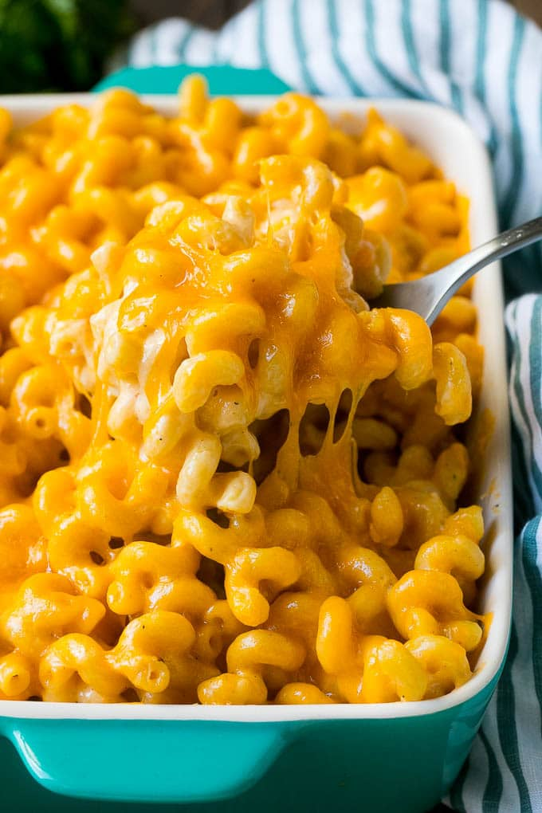

Maceroni and Cheese

Home
Description
This receipe makes a cheesee maceroni and cheese with
bread-crumbs
Ingrediants
- 2 cups elbow maceroni
- 1 stick butter
- 1/2 cup flower
- 4 cups milk
- 1/2 block (16oz) velveeta cheese
- pepper
- mozzarella cheese
- Mexican 4 style cheese blend
- chedar cheese
- bread crumbs
- Parmesan cheese
Steps
-
Bring 2 cups elbow maceroni to a boil
and drain
-
Melt whole stick of butter into the pot you used
to boil the maceroni
-
Set stove to medium-high heat, mix in 1/2 cup flour,
stirring constatntly until you get a mixture with a
consistancy similar to apple-sauce
-
Mix in 1 cup of milk, stir until homogenous, mix in
another cup of milk, stir constantly for 3 minutes
-
Mix in 16 oz veleeta cheese, stir constantly for 5
minutes or until cheese is totally melted
-
Mix in another cup of milk, similar to step 4
-
Add some pepper to cheese-sauce
-
pour boiled maceroni into baking dish and add
cheese sauce
-
Add desired amount of shredded mozzarella,
shredded Mexican 4 style cheese blend,
shredded cheddar
-
Stir to mix the cheese with the noodles
-
Add a layer of shredded cheese to the top of
the dish
-
Add layer of bread-crumbs on top of the shredded
cheese layer
-
Top it off with some parmesan
-
Cover the dish, bake on 350 degrees for 10 minutes
-
Remove dish from oven, remove cover
-
Broil for up to 5 minutes to toast bread-crumbs